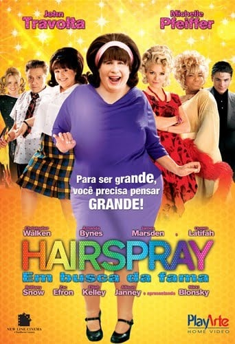

Hairspray
Descrição
Em 1960, uma adolescente de Baltimore, Tracy Turnblad, apaixonada por dança, se inscreve para participar de um programa local, chamado The Corny Collins Show, e é aceita. Da noite para o dia, torna-se uma celebridade e eleva seu estilo irreverente de dança no show. O fato de ser popular é suficiente para terminar o reinado de Corny e provocar uma integração racial.
Prêmios
Outros filmes: